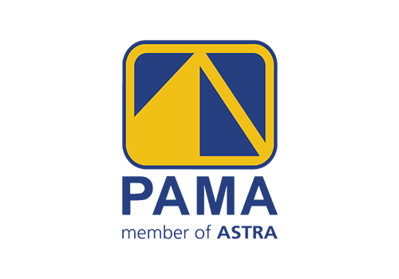

Experience
01Freelance Surveyor
Performed topographic surveys using CHCNAV GNSS for boundary mapping, elevation profiling, and site planning. Conducted verticality and alignment measurements using total station for structural and construction quality control. Acquired aerial imagery using the DJI Phantom 4 Pro.

Mine Survey Intern
Conducted daily pit surface surveys using RIEGL TLS and Trimble GNSS, and acquired orthophotos using a UAV. Processed topographic data, generated terrain models, and performed volumetric calculations using 12d Model. Completed internship project on UAV-based haul road geometry evaluation.
Laboratory Assistant (Photogrammetry & Remote Sensing)
Coordinated the execution of photogrammetry and remote sensing practical sessions based on module guidelines. Prepared teaching materials, supervised data processing activities during practicum sessions, and evaluated student performance through structured assessments.
Surveyor Intern
Conducted LiDAR data acquisition using the DJI Matrice 350 drone system for topographic mapping. Processed and classified point cloud data using TerraSolid for analysis and visualization. Generated elevation models and contour maps from processed LiDAR datasets.